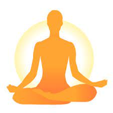

Короткочасний стрес мобілізує ресурси організму та надає енергії. Але постійний хронічний стрес негативно впливає на ендокринну, серцево-судинну та дихальну систему, знижуючи імунітет, пам'ять та здатність до концентрації.
Небезпечний не сам стрес, а тривалість реакції на нього та відсутність часу на відновлення. В умовах постійних хвилювань через пандемію та загрозу військових дій із хронічним стресом стикається більшість людей. Виходити з цього стану та переривати стресову реакцію можна навчитися.
Небезпечний не сам стрес, а тривалість реакції на нього та відсутність часу на відновлення. В умовах постійних хвилювань через пандемію та загрозу військових дій із хронічним стресом стикається більшість людей. Виходити з цього стану та переривати стресову реакцію можна навчитися.
Важливими є дві стратегії: розвивати звички, які допоможуть стати стресостійким і резильєнтним, і навчитися контролювати стресову реакцію в момент, коли вона виникає, не дозволяючи їй тривати довше, ніж необхідно.
Рухайтеся та займайтеся спортом.
Стреси у наших предків були повʼязані з фізичним виживанням: у стресовій ситуації вони бігли чи билися. Тренування імітують природну реакцію на стрес, використовуючи зміни у серцево-судинній системі, що виникають після стресу. Заняття спортом ініціюють виділення дофаміну, серотоніну та ендорфінів, що викликає почуття задоволення та спокою. Вправи будуть корисні як профілактика занадто інтенсивної реакції на стрес, і як спосіб швидко заспокоїтися
.

Ефекти медитації торкаються кількох систем організму, що беруть участь у формуванні стрес-реакції. Нейробіолог Олександр Скороход пояснює : практика впливає безпосередньо на нейромедіатори стресу, знижуючи рівень кортизолу та збільшуючи рівень серотоніну, який повʼязаний із відчуттям щастя. Медитація збільшує концентрацію гамма-аміномасляної кислоти, яка відповідає за процеси гальмування у нервовій системі. Це забезпечує зібраність та спокій. Психолог Валентина Паробій називає медитацію та інші техніки свідомості спортзалом для префронтальної кори мозку. Ця ділянка контролює швидкість емоційних реакцій, і практики допомагають утримати контроль.
Новачкам варто починати з кількох хвилин медитації на день — від пʼяти до деся.Так буде простіше звикнути та систематично виділяти час на заняття.
Дихайте
Глибоке дихання активує парасимпатичну нервову систему, збільшує тонус блукаючого нерва та заспокоює. Під час стресу ми дихаємо часто і поверхнево — на противагу цьому дихальні вправи повинні бути повільними та глибокими. У розслаблюючому диханні важливі короткий вдих, видих у кілька разів довший за вдих і затримки на видиху в межах комфорту, пише в своєму блозі вчений Андрій Беловєшкін. Він рекомендує рахувати про себе: вдих на 4 рахунки, видих — на 8, і затримка на видиху на 6 рахунків.
Вмивайте обличчя холодною водою.
Це ефективний спосіб швидко заспокоїтись. Варто занурити обличчя у холодну воду, дихання сповільниться та стане глибшим, а пульс нормалізується, пояснює кандидат біологічних наук Вікторія Кравченко.
Піклуйтеся про себе.
Щоб сформувати резильєнтність до стресу, важливо задовольняти потреби у русі, сні та здоровому харчуванні. Психолог і автор однієї з гілок когнітивно-поведінкової терапії Стівен Гейз не починає працювати з пацієнтами, поки не нормалізує їхній сон, активність та харчування. Паробій порівнює депривацію сну із добровільною евтаназією: недосипання відчутно підриває стресостійкість.
Що зробити, щоб спати краще?
- Очистіть спальню від світлового забруднення. Спробуйте щільно завісити вікно щільною тканиною, якщо воно хоч трохи пропускає світло, і накрити або заклеїти всі маленькі лампочки на пристроях, які неможливо перенести в іншу кімнату.
- Обрати ритуали підготовки до сну хоча б на 30–60 хвилин без гаджетів. Це можуть бути розслаблюючі практики на кшталт медитації чи пранаями, журналінг, умивання, самомасаж, душ, читання паперової книжки.
- Внести фізичні активності, хоча б прогулянку пішки, у свій щоденний графік.
- Неважливо, які ваші простирадла, матрац та подушки, базові чи люксові, головне, щоб вони були зручними, а ви вранці не відчували себе розбитими від болю у шиї, спині тощо.
- Приймати гарячий душ або ванну. Після теплої ванни при переході в прохолодну спальню зміна температури допоможе охолодити тіло.
- Зручно одягатись для сну. Ви можете спати голими, в білизні або піжамі, як вам комфортно, головне, щоб було зручно.
- Вечеряти не пізніше ніж за 3–4 години до сну, не вживати алкоголь за 5 годин і не пити кави після обіду.
- Залишити спальню для сну та сексу. Чим більше атмосфера спальні або спальної зони (якщо спальня не є окремим приміщенням) схиляє до сну, тим краще.
- Підлаштуйте графік, щоб прокидатися і лягати спати в один і той же час щодня.
- кщо через подорож або життєві обставини ви тимчасово випали із графіка та ритуалів, повертайтеся до них і не лайте себе.
Зробіть раціон «стресостійким». Харчування може допомогти впоратися з переживаннями та підтримати рівні самоконтролю, вважає нутріціолог Оксана Соколова.
- Складні вуглеводи – крупи, овочі, фрукти, хліб грубого помелу – допомагають підтримувати рівномірний рівень цукру в крові. Це безпосередньо впливає на емоційний фон.
- Пункт
- Не пропускайте прийоми їжі. Це може призвести до падіння рівня цукру в крові, через що ви відчуєте нервозність, занепокоєння та зниження когнітивних здібностей.
- Коли їдете у відрядження, продумуйте заздалегідь, де будете жити і чим будете харчуватися. Фаст-фуд, перекуси «похапцем» і необхідність обирати, де поїсти, будуть виводити вас з рівноваги, заважаючи роботі та створюючи додаткові стресові ситуації.
- Близько 95% рецепторів серотоніну знаходиться у слизовій оболонці кишечника. Найкраще харчування для кишечника – клітковина: овочі, зелень та фрукти.
- Стан тривоги та стресу повʼязаний із загальним зниженим антиоксидантного стану. Продукти з високим вмістом антиоксидантів: квасоля, фрукти (яблука, черешня, сливи), ягоди (ожина, полуниця, журавлина, малина, чорниця), горіхи (волоські, пекан, бразильські), овочі (капуста, шпинат, буряк, броколі), спеції, що мають як антиоксидантні, так і заспокійливі властивості (куркума, імбир).
Співайте.
Спів знижує рівень стресу, тривоги та рівень кортизолу, послаблює депресивну симптоматику та збільшує рівень ендорфінів. Зона іннервації блукаючого нерва охоплює мʼязи гортані. Коли ми співаємо, збільшується активність парасимпатичної системи, що сприяє заспокоєнню, пояснює Вікторія Кравченко.
оригінальна стаття на Forbes